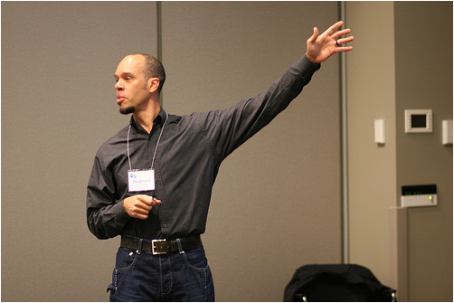

reginald braithwaite
links
recent news
not-so-recent news
career
I am a software developer and development manager with more than twenty years of professional experience. I am a development lead, architect, and/or senior developer with Unspace Interactive. I also consult and deliver buzzword-free workshops on software development for teams, speak at users’ group meetings, and present at conferences like CUSEC, RubyFringe and MeshU. I have delivered software development training, development management training, and sales training.
I work with Coffeescript, Javascript, Ruby, Rails, and Java.
I recently led a team developing and maintaining the on-line service offering—in partnership with an internal team—of ING Direct (USA), one of the world’s largest financial organizations.
I have also created a hugely successful software development tool suite, JProbe, in an Independent Software Vendor (“ISV”) environment. I have also created business software, both Enterprise Class Software (with 3,000,000+ external users) and Software that Powers the Enterprise (200 – 2,000 internal users). I have led teams from three to twenty-three in size. I have also been a top major accounts sales executive and also held positions as a marketing manager and copywriter.
writing
I write code and words about code in homoiconic. It’s a specialty un-blog for programmers who are interested in how and why and not just what. Prior to homoiconic, I wrote raganwald a popular weblog about passionate programming. My friendfeed is useful if you want a great deal of detail.
technology experience
In addition to working on Rails and Java applications scaling out to millions of users, I have released Wood & Stones, a free-as-in-beer HTML5+Javascript+CSS application for playing various Go games on an iPad, and two free-as-in-speech jQuery plugins, jQuery Combinators and iGesture. I have also developed several free-as-in-speech metaprogramming extensions for the Ruby programming language, including rewrite_rails, the very popular andand, and the monadic Invocation Construction Kit.
I have spent most of my career creating cross-platform (and recently cross-browser) software for Unix, Macintosh, and Windows systems, not to mention MS-DOS, CP/M and MP/M. My professional programming experience includes work with JavaScript, Ruby, Java, C/C++, Scheme, SQL, Pascal, and Basic. I have developed web applications, stand-alone desktop applications, client-server applications, and multi-user terminal applications. I have worked with jQuery, J2EE, Ruby on Rails, and various OS toolboxes/APIs.
My technical speciality is developing infrastructure (such as domain-specific or embedded languages, testing frameworks, macros, and libraries) to accelerate development and ease maintenance/reengineering. This technical approach integrates strongly with my iterative development experience.
interests
My long-time research interest was applying statistical analysis of empirical data to predicting the outcome of software development projects. I am currently on hiatus from thinking about developing software more effectively in order to focus on actually developing software most effectively.
I am a lifelong cyclist, I'm an avid rock climber and a scuba diver from time to time. I am interested in Math, Logic, and solving puzzles. Raymond Smullyan is my favourite non-fiction author.
You can follow me on Twitter. This is where I link to interesting technical content. I’m also on Facebook, this is where the less interesting and more personal stuff is published.
e-gauche
contact
For email, most people call me reg, and you know that this page is hosted at braythwayt.com.
the answer to an infrequently asked question
Raganwald is my own made-up variation on the Norse name Ragnvald, which is the origin of the Norman name Reginald (if you go back to back to Sanskrit, you find that Ragnvald is loosely related to the Indian name Raj). Braythwayt is a very rare spelling for my surname. I first encountered “Braythwayt” in a P.G. Wodehouse short story when the hapless Bingo Little abandons Honoria Glossop to chivvy Daphne Braythwayt about, and Honoria assumes Bertie loves her and accepts what she thinks is his implied proposal… But perhaps you should read that story for yourself.